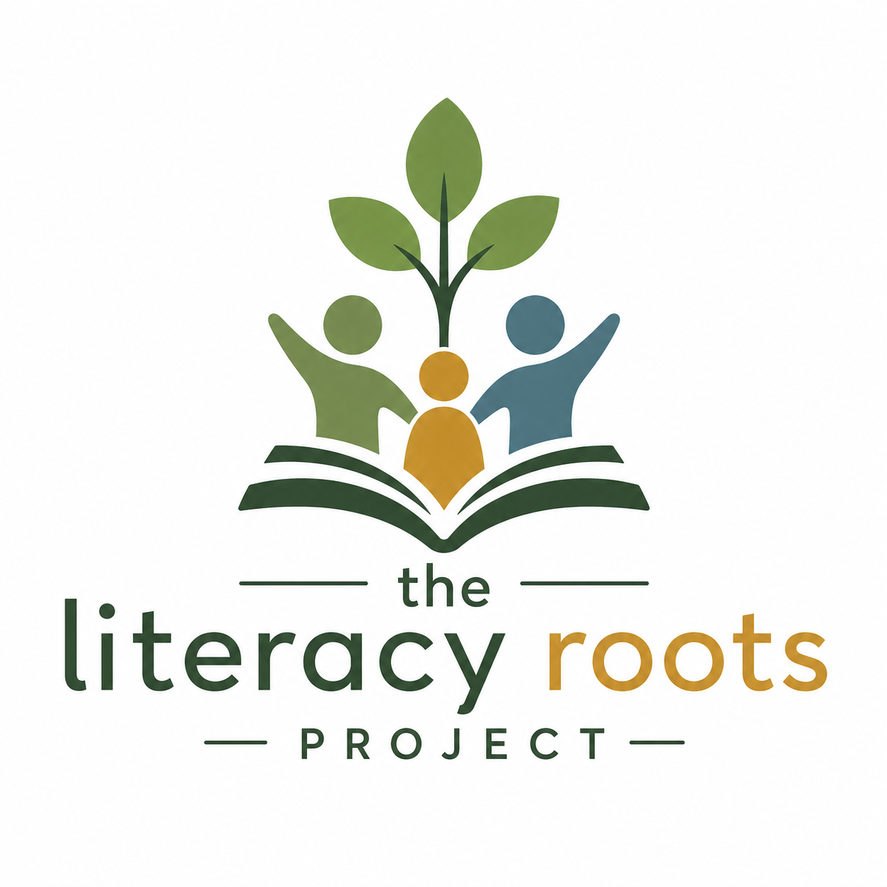
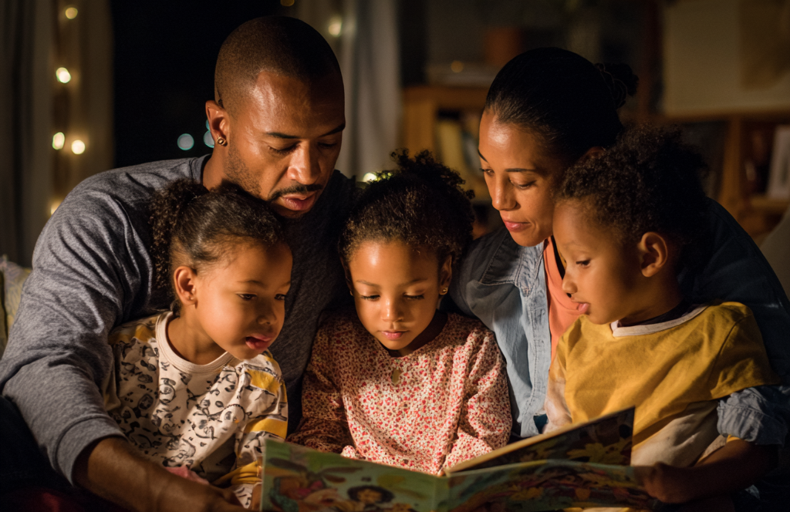
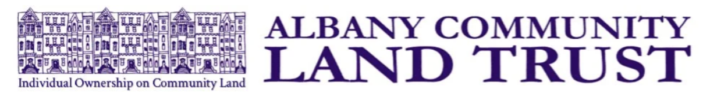
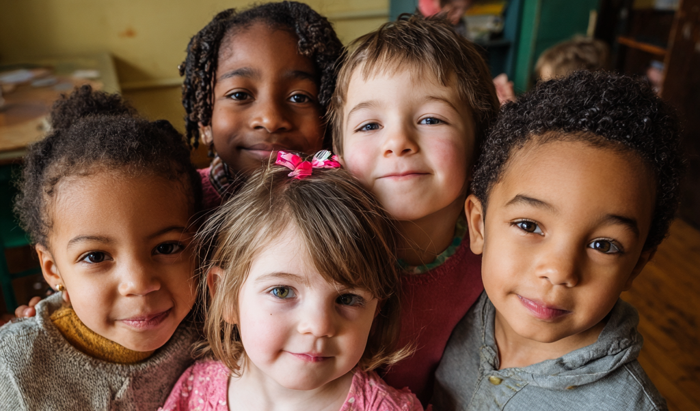
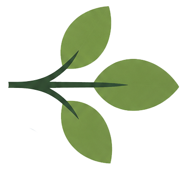

We help children build strong literacy foundations while equipping parents and caregivers with the knowledge, confidence, and resources to help their families thrive. Through free, family-centered education and early literacy programs, we're breaking down barriers to opportunity—starting at home.
Donate
A child's first classroom is the home. Their first teachers are the people who love and care for them. Long before kindergarten, everyday experiences—talking, reading, singing, playing, and connecting—help build the language, relationships, and early literacy skills children need to succeed.
But not every family has equal access to the resources and support that make these experiences possible. Financial hardship, housing instability, and other challenges can create barriers to early learning.
The Literacy Roots Project works to remove those barriers. By providing free early literacy education, practical parenting tools, and connections to community resources, we help families create nurturing environments where children can learn, grow, and thrive.
Children don't learn in isolation. Their development is shaped by the relationships, experiences, and environments surrounding them.
That's why The Literacy Roots Project takes a two-generation approach—supporting children's early learning while strengthening the knowledge, skills, and confidence of the adults who care for them.
Because when families have the tools and support to thrive, children have a stronger foundation for success.
Interactive workshops for expectant parents and caregivers of children ages 0–3, offering evidence-based strategies to nurture early language and literacy development through everyday activities, shared reading, and responsive interactions that lay the foundation for lifelong learning.
A free, seven-week program empowering expectant parents and caregivers of young children with practical knowledge of child development, positive discipline, early literacy, and family well-being. Participants build parenting confidence, strengthen family relationships, and connect with essential community resources.
A free, five-week summer program for children ages 4–6, combining individualized literacy instruction, storytelling, creative exploration, and social-emotional learning. Through engaging, developmentally appropriate activities, children build foundational reading skills, confidence, curiosity, and readiness for success in school.
In partnership with The RED Bookshelf, Curiosity Club connects children with books selected around their unique interests. Personalized book bundles encourage independent exploration, spark imagination, strengthen reading motivation, and help children build home libraries that inspire lifelong curiosity.
Building strong community partnerships that connect families to resources, support services, and local opportunities that promote family well-being, strengthen stability, and reduce barriers--ultimately allowing caregivers to focus on their family's success.
New neural connections form every second during the first few years of life. (Harvard Center on the Developing Child)
Of U.S. fourth graders scored below NAEP Proficient in reading in 2024. (2024 Nation's Report Card)
Of U.S. children ages 0–5 were read to daily by family members in 2023–24. (National Survey of Children's Health)
Higher adjusted odds of reading aloud at least three days weekly were associated with a family literacy intervention. (Reach Out and Read research)
The Literacy Roots Project strengthens children, families, and communities through early literacy education, parent empowerment, and family-centered support.
Through two-generation learning initiatives, we support children's early development while equipping parents and caregivers with the knowledge, skills, confidence, and resources to foster learning at home, advocate for their children, and build healthy, nurturing family environments.
Our mission is to expand educational opportunity, strengthen family stability, and help break intergenerational cycles of poverty—beginning with the earliest years of life.



She founded The Literacy Roots Project to advance a two-generation approach that empowers parents, strengthens families, and expands educational opportunity for children.
Samantha Hicks brings more than two decades of nonprofit leadership experience in organizational governance, strategic planning, grants management, donor engagement, and fiscal oversight. Throughout her career, she has successfully secured and managed grant funding, cultivated relationships with stakeholders and community partners, guided organizational development initiatives, and overseen financial operations that promote long-term sustainability and mission impact. Her expertise in budgeting, compliance, and nonprofit administration helps ensure that the Foundation's programs remain effective, accountable, and responsive to community needs.
Prior to her nonprofit career, Samantha spent 17-years in the maritime education industry and holds a U.S. Coast Guard 500-ton Ocean Master’s license. She served as Captain of the historic Hudson River Sloop Clearwater and is currently the Board Chair. After relocating to New York's Capital Region with her family, she earned a Master of Public Administration from the University at Albany. A passionate advocate for early childhood education and community engagement, Samantha recognizes that a strong literacy foundation strengthens families, lifts up the neighborhoods in which they live, and creates lifelong opportunities for success. Outside of her professional work, she enjoys the region's arts and music scene and spending time outdoors hiking with her family.
Christina is a dedicated early childhood educator with more than 10 years of experience teaching young children in Early Childhood and Universal Pre-K classrooms. She earned her Bachelor's Degree in Childhood Education from The College of Saint Rose and is passionate about helping children develop strong literacy skills and a lifelong love of learning.
As both an educator and a mother, Christina understands the importance of supporting the whole family in a child's learning journey. Through The Literacy Roots Project, she works to build children's confidence, strengthen early literacy foundations, and provide families with practical tools that encourage learning and growth at home.